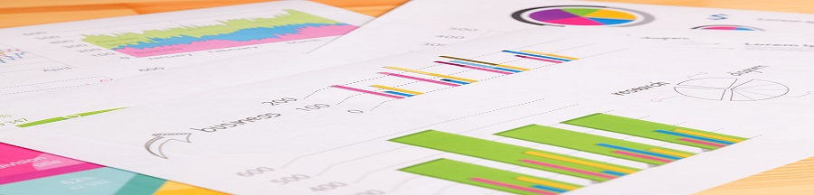

査読付き論文
- 北條大樹・岡田謙介. (2018). 係留ビネット法による反応スタイルの分類 ヨーロッパの大規模健康調査を例に. 行動計量学, 45, 13-25.[J-stage] [OSF] (Code)
- 北條大樹・岡田謙介. (2017). 評定尺度における反応傾向を考慮した係留寸描データのベイズ的項目反応モデル. データ分析の理論と応用, 6, 113-125. [OSF] (Code)
書籍
- [分担執筆]北條大樹 (2018). 第19章 男女間のナルシシズム傾向の差の検討――性別によるDIFを統制したベイズ項目反応モデル―― in: 豊田秀樹 (編) たのしいベイズモデリング. 北大路書房. [Amazon]
紀要・その他
- 髙岡昂太, 坂本次郎, 北條大樹, 橋本笑穂, ... & 本村陽一(詳細はpdf). (2019). 里親担当児童福祉司、一時保護所の児童指導員等及び市区町村要保護児童対策調整機関職員の勤務実態・業務内容に関する調査研究, 厚生労働省 平成30年度子ども・子育て支援推進調査研究事業1 [pdf](資料・報告書)
- 髙岡昂太, 坂本次郎, 北條大樹, 橋本笑穂, ... & 本村陽一(詳細はpdf). (2019). リスクアセスメントツール等の利用と業務統計の見直しにかかる情報集約システムの構築に関する研究, 厚生労働省 平成30年度子ども・子育て支援推進調査研究事業7 [pdf] (資料・報告書)
- ~,...,北條大樹,.... (in press). ...,(資料・報告書(都道府県X,公開前))
- ~,...,北條大樹,.... (in press). ...,(資料・報告書(都道府県Y,公開前))
- ~,...,北條大樹,.... (in press). ...,(資料・報告書(都道府県Z,公開前))
- ~,...,北條大樹,.... (in press). ...,(資料・報告書(市区町村X,公開前))
- 北條大樹. (2017) 柳井・池田スカラシップによるMathPsych2016での研究発表. 日本テスト学会 Vol.13 No.1 p.94.(報告)
- 北條大樹・岡田謙介. (2017). ロジスティック型項目反応理論モデルにおけるJAGSとStanを用いた推定の比較評価. 専修人間科学論集心理学篇, 7, 15-23.(紀要論文)
国際学会発表
- Kota Takaoka, Jiro Sakamoto, Daiki Hojo, Emiho Hashimoto, & Yui Furukawa. (2019). Data Driven Effective Case Management Method for Child Maltreatment with Bayesian Statistical Modeling and Machine Learning. ISPCAN INTERNATIONAL CONGRESS, OMAN (IPSCAN 2019), 2019-09-17 (Oral).
- Kota Takaoka, Jiro Sakamoto, Emiho Hashimoto, Daiki Hojo, Yui Furukawa, Akira Suzuki, & Tsuneo Yamamoto. (2019). Assistant of Intelligence of Child Abuse and Neglect (AiCAN) : Artificial Intelligence for decision making supporting system. ISPCAN INTERNATIONAL CONGRESS, OMAN (IPSCAN 2019), 2019-09-15 (Oral).
- Emiho Hashimoto, Kota Takaoka, Jiro Sakamoto, & Daiki Hojo. (2019). The recurrent risk factors around temporary child custody detected by text mining method. ISPCAN INTERNATIONAL CONGRESS, OMAN (IPSCAN 2019), 2019-09-15 (Poster).
- Daiki Hojo & Kensuke Okada. (2019). Comparative performance of item response models for anchoring vignettes data. Society for Mathematical Psychology (MathPsych 2019), 2019-07-20 (Poster).
- Kensuke Okada, Daiki Hojo, & Yusuke Takahashi. (2018). Bayesian item response mixture model for evaluating the stability of response style. Society for Mathematical Psychology (MathPsych 2018), 2018-07-22 (Oral).
- Daiki Hojo & Kensuke Okada. (2018). Classification and individual differences of response style using anchoring vignettes. Society for Mathematical Psychology (MathPsych 2018), 2018-07-22 (Poster).
- Kensuke Okada, Daiki Hojo, & Yusuke Takahashi. (2017). Assessing the stability of response styles by using Bayesian item response modeling. CMStatistics2017(Computational and Methodological Statistics), E1540(SessionEC697), 2017-12-17 (Oral).
- Daiki Hojo & Kensuke Okada. (2017). Bayesian generalized partial credit type model of anchoring vignettes : Are latent response categories evenly spaced? Society for Mathematical Psychology (MathPsych 2017), 46-47, 2017-07-23 (Poster).
- Kensuke Okada & Daiki Hojo. (2017). Model Comparison in Bayesian Item Response Models for Anchoring Vignettes. IMPS2017,, 2017-07-21 (Oral).
- Daiki Hojo & Kensuke Okada. (2016). Bayesian item response model with anchoring vignettes for correcting the response style bias in rating scales. Society for Mathematical Psychology (MathPsych 2016), 65, 2016-08-05 (Poster).
国内学会発表
- 坂本次郎・髙岡昂太・鈴木聡・橋本笑穂・北條大樹・先光毅士・成島絹登・山本恒雄. (2019). 虐待対応に係る一時保護需要予測ーー再発防止を考慮した保護日数による同時保護件数のベイズ統計モデリングーー, ポスター発表, 第２５回 日本子ども虐待防止学会, 兵庫県 神戸市, 神戸国際会議場, 2019年12月22日(Poster).
- 橋本笑穂・髙岡昂太・坂本次郎・北條大樹・先光毅士・鈴木聡・山本恒雄・成島絹登. (2019). 児童相談所在宅支援決定理由のテキスト解析, ポスター発表, 第２５回 日本子ども虐待防止学会, 兵庫県 神戸市, 神戸国際会議場, 2019年12月22日(Poster).
- 北條大樹・髙岡昂太・坂本次郎・橋本笑穂・山本恒雄. (2019). IoTセンサーとウェアラブル端末を用いた一時保護所職員の業務負担の可視化, 口頭発表, 第２５回 日本子ども虐待防止学会, 兵庫県 神戸市, 神戸ポートピアホテル, 2019年12月22日(Oral).
- 髙岡昂太・坂本次郎・先光毅士・橋本笑穂・北條大樹・山本恒雄・鈴木聡. (2019). 「児童虐待対応AI "AiCAN"」, 口頭発表, 第２５回 日本子ども虐待防止学会, 兵庫県 神戸市, 神戸ポートピアホテル, 2019年12月22日(Oral).
- 北條大樹. (2019). 「ベイズ統計モデリングと項目反応理論」. 公募シンポジウム「児童相談所 & 要対協におけるAI実装を進めるために: データ項目・システム・セキュリティ・運用について(6)」 話題提供 第２５回 日本子ども虐待防止学会, 兵庫県 神戸市, 神戸ポートピアホテル, 2019年12月21日(Oral).
- 北條大樹・岡田謙介. (2019). 一般化正規分布を用いたフルベイジアン罰則回帰モデルの提案. 2019年度 統計関連学会連合大会講演報告集, p54, 2019-09-09 (Oral). [PDF].
- 北條大樹・二瓶正登・岡田謙介. (2019). 逆転項目の反応過程を考慮したベイズ項目反応モデルの比較・検討. 日本行動計量学会第47回大会 抄録集, p346-347, 2019-09-06 (Oral).
- 二瓶正登・北條大樹・澤幸祐. (2019). 社会的刺激を用いた恐怖条件づけにおける復元効果のベイズモデリング. 日本認知・行動療法学会第45回大会, 抄録集, p, 2019-08- (Poster).
- 髙岡昂太, 坂本次郎, 北條大樹, 橋本笑穂, 山本恒雄, 北村光司, ... & 本村陽一. (2018). 子ども虐待における AI 実装: pLSA とベイジアンネットワークを用いた再発事例の検討. SIG-SAI, 33(5), 1-7.
*本発表は、SIG-SAIにおいて、研究会優秀賞を受賞しました。 - 北條大樹. (2018). IRTの基礎とIRTモデリング. 日本心理学会第82回大会, 公募シンポジウム「項目反応モデルを用いた心理学実践研究と応用可能性」, p, 2018-09-27 (企画代表者, 司会, 話題提供, Symposium).
- 北條大樹. (2018). 心理学者のためのJASP統計解析入門. 日本心理学会第82回大会 チュートリアルワークショップ, 2018-09-25 (企画代表者, Tutorial Workshop).
- 池田孝恒・北條大樹・岡田謙介. (2018). 大学授業シラバスデータを利用した自然言語処理 ―専修大学における経済系3学部の特徴の抽出と可視化―. 日本教育心理学会第60回大会, 2018-09-15 (Poster).
- 北條大樹・岡田謙介. (2018). 項目回答における主要な反応スタイルについての再考 ―分割型クラスタリングによる心理変数における反応スタイルの分類―. 日本教育心理学会, 2018-09-15 (Poster).
- 北條大樹・岡田謙介. (2018). 係留ビネット法に適した多次元名義反応モデルの提案. 日本行動計量学会第46回大会 抄録集, p56-57, 2018-09-04 (Oral).
- 二瓶正登・北條大樹・澤幸祐. (2018). 社会的刺激を用いた恐怖条件づけにおける復元効果の検討. 第10回日本不安症学会 学術大会, 抄録集, p113, 2018-03-16 (Poster).
*本発表は、第10回日本不安症学会 学術大会において、若手優秀演題賞を受賞しました。 - 北條大樹. (2017). 質問紙における回答バイアス統制のためのベイズ統計モデリング. 日本認知・行動療法学会第43回大会, 自主企画シンポジウム 7「臨床実践と研究に活かすベイズ統計学」, 2017-09-30 (Oral,Symposium). [Slide]
- 北條大樹・岡田謙介. (2017). 評定尺度における反応傾向を考慮した係留寸描データのベイズ的項目反応モデル. 2017年度 統計関連学会連合大会講演報告集, p7, 2017-09-04 (Oral,Symposium). [PDF] [Slide]
- 北條大樹・田中利夫・杣取恵太・坂本次郎(発表者). (2017). 非耐久消費財テレビ広告の統合効果と年次的推移 階層ベイズモデルによるメタ分析・メタ回帰分析. 日本行動計量学会第45回大会 抄録集, p202, 2017-08-31 (Poster).
- 北條大樹・岡田謙介. (2017). 係留ビネット法の項目数の違いが与える影響の定量的評価. 日本テスト学会第15回大会発表論文抄録集, p144-145, 2017-08-20 (Oral).
- 北條大樹・岡田謙介. (2016). 反応傾向バイアスに対処するための新たな係留寸描法データ分析モデル. 日本計算機統計学会シンポジウム論文集, 30, 11-14, 2016-11-24 (Oral).
- 北條大樹・岡田謙介. (2016). 係留寸描法データのベイズ多次元IRTモデル 質問紙調査法における反応傾向統制モデルの検討. 日本行動計量学会第44回大会 抄録集, p278-279, 2016-09-01 (Poster).
研究会等(更新停止)
- 北條大樹・岡田謙介. (2017). 心理学調査法における係留ビネット法の応用, 計算機統計学会 2017年度若手セミナー, 岐阜県高山市 民宿信田, 2017-09-03(Oral).
- 北條大樹・岡田謙介. (2017). 係留寸描法を用いた反応傾向バイアス補正のためのIRTモデルの応用, 「複雑多変量データの解析法に関する研究」研究会, 統計数理研究所, 2017-03-08(Oral).
受賞歴
- 2019年06月 SIG-SAI(一般社団法人人工知能学会) 研究会優秀賞(責任発表者 髙岡昂太, 第3著者 北條)
- 2018年02月 第10回日本不安症学会 若手優秀演題賞(責任発表者 二瓶正登, 第2著者 北條)
- 2018年02月 第1回 和歌山県データ利活用コンペティション 和歌山県賞 大賞
- 2018年02月 第1回 和歌山県データ利活用コンペティション 協賛企業賞 SAS賞
- 2017年01月 野村総研 NRIデータ分析コンテスト2016 最優秀賞
- 2016年11月 日本計算機統計学会 第30回シンポジウム 学生研究発表賞
- 2016年05月 日本テスト学会 池田・柳井スカラシップ
- 2015年11月 NTT数理システム 学生研究発表賞 佳作
- 2014年11月 NTT数理システム 学生研究発表賞 佳作